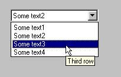

ComboBox с всплывающими
подсказками
Автор: Edward Antonyan.

Требования: VC6 SP5, NT4 SP6 ( на других ОС не
тестировалось )
В примере описывается, как заменить
стандартный выпадающий список на виртуальный, с
той целью, чтобы к элементам списка можно было
добавить подсказки, а так же предотвратить
наличие двух идентичных списков.
Для использования данного combo box, сделайте
следующее:
- Включите в проект TooltipComboBox.h, TooltipComboBox.cpp,
TooltipListCtrl.h и TooltipListCtrl.cpp.
- В редакторе ресурсов создайте droplist combobox.
- В Визарде создайте переменную для combobox.
- В Ваш .h файл включите TooltipComboBox.h и замените CComboBox
на CTooltipComboBox. Также включите afxtempl.h для поддержки
CMap.
- Для того, чтобы создать свои собственные
подсказки, необходимо использовать функции
SetItemTip, SetComboTip, или заменить функцию GetItemTip
в CTooltipListCtrl, и функцию GetComboTip
в CTooltipComboBox.
Downloads
Скачать исходник - 6 Kb
|